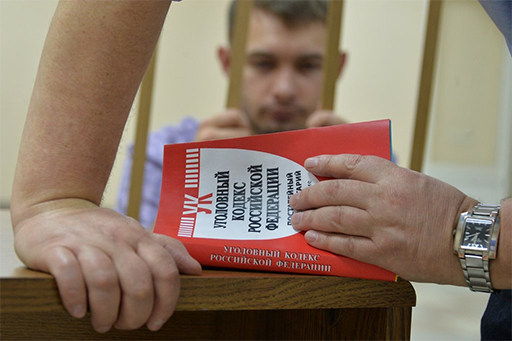

Понятие уголовного права
ЦИТАТА
Уголовное право – это отрасль российского права, представляющая собой совокупность юридических норм, которые определяют преступность и наказуемость деяний, опасных для общества, а также условия освобождения от уголовной ответственности.
Ключевыми понятиями в уголовном праве являются понятия «преступление» и «наказание». Спецификой уголовно-правовых отношений можно считать тот факт, что уголовное право регулирует наиболее опасные и тяжкие по своим последствиям деяния (преступления) и подразумевает применение у преступнику наиболее суровых мер юридической ответственности (уголовных наказаний). Термин «уголовное право» подчеркивает эту специфику: в памятниках древнерусского права понятием «головничество» обозначали убийство, виновный в совершении убийства также «отвечал головой», то есть подлежал смертной казни.
Предмет уголовного права
Как и все отрасли права, уголовное право имеет отличающий его от других отраслей права предмет, то есть совокупность общественных отношений, которые оно призвано регулировать. Предмет уголовного права носит охранительный характер – он не связан с какими-либо производственными или потребительскими отношениями, а защищает общественные отношения от преступных посягательств. Обязательным участником уголовно-правовых отношений является государство, которое посредством своих карательных органов обладает монополией на применение уголовного наказания и ограничение прав и свобод граждан в связи с совершением ими преступлений.
Предметом уголовного права являются общественно-правовые отношения, возникающие в связи с реализацией уголовной ответственности, то есть совершением преступления и назначением наказания за него.
Под преступлением понимается деяние (действие или бездействие), причиняющее вред интересам конкретной личности, либо общества в целом, либо государства. Наказание, в свою очередь, представляет собой неблагоприятные для лица, совершившего преступление, последствия, применяемые к нему органами государственной власти.
По мнению А.В. Наумова, предмет уголовно-правового регулирования включает три основные разновидности уголовно-правовых отношений:
1) охранительные – возникающие в связи с совершением преступления и причинением ущерба. Это отношения между лицом, совершившим преступление, и государством, состоящие в применении к этому лицу уголовного наказания;
2) общепредупредительные – удерживающие лиц от совершения преступления путем установления уголовно-правового запрета. В отличие от охранительных, эти отношения не связаны с уже совершенным преступлением, а призваны предупреждать его совершение;
3) регулятивные – наделяющие граждан правом на причинение вреда при защите от опасных посягательств, исключающих преступность деяния (при необходимой обороне, крайней необходимости и других обстоятельствах).
Уголовное право также имеет свой особый метод правового регулирования – совокупность приемов и способов воздействия уголовного права на общественные отношения.
Это воздействие выражается в уполномочивании, разрешении, предписании и запрете.
Уполномочивающие нормы предоставляют участникам общественных отношений право совершать положительные действия в целях удовлетворения своих интересов (владеть имуществом, требовать от обязанных лиц исполнения обязательств). Эти нормы только предоставляют право и не требуют от участников выполнения обязательных действий.
Разрешающие нормы предоставляют участникам право на совершение по своему усмотрению различных действий, которые ограничены либо запрещены законодательством (разрешение на владение оружием, разрешение на хранение наркотических средств, разрешение на занятие определенной деятельностью и т.д.).
Предписывающие нормы устанавливают обязанность совершать определенные положительные действия (выполнять оговоренные договором обязательства, возвращать долги, соблюдать правила дорожного движения и т.д.).
Запрещающие нормы устанавливают обязанность участникам правоотношений воздержаться от определенных действий или бездействия под страхом наказания (совершать хищение чужого имущества, не оказывать помощь больному и т.д.). Метод правового запрета – базовый для уголовного права. Особенности уголовно-правового запрета проявляются в запрещении наиболее общественно опасных деяний, в тяжести правовых последствий, наступающих для лица, нарушившего правовой запрет.